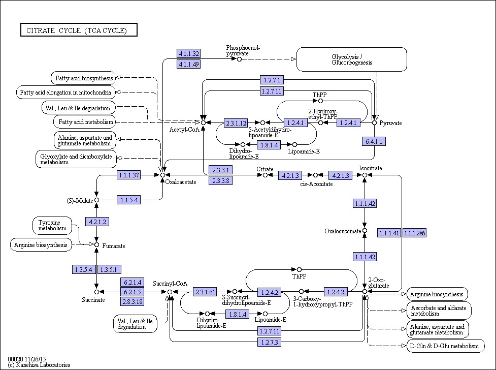

- K00658
- Up regulated genes
transcript_HQ_A_transcript16358/f1p0/2473(3.1067)

- K01900
- Down regulated genes
transcript_HQ_B_transcript29897/f1p0/1736(-2.8099)
- K01900
- Down regulated genes
transcript_HQ_B_transcript29897/f1p0/1736(-2.8099)
- K01648
- Up regulated genes
transcript_HQ_A_transcript891/f13p0/4260(2.9587)
- K01681
- Up regulated genes
transcript_HQ_B_transcript38330/f1p0/4153(4.5049)
- K01681
- Up regulated genes
transcript_HQ_B_transcript38330/f1p0/4153(4.5049)
- K01647
- Down regulated genes
transcript_HQ_A_transcript27094/f1p0/1445(-5.7778)
- K00026
- Up regulated genes
transcript_HQ_B_transcript37798/f1p0/1411(4.3698)